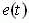
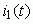
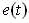
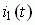
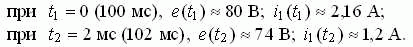

Задание 4. Срисовать с экрана осциллографа (или распечатать) графики зависимостей  и , измерить мгновенные значения ЭДС е и i1 при t1 = 0 и t2 = 2 мс и занести их в табл. 16.1. Чтобы исключить влияние свободной составляющей переходного режима курсор 1 осциллографа рекомендуется установить в положение T1 = 100 мс (по истечении пяти периодов основной гармоники ЭДС), а курсор 2 - в положение T2 = 102 мс.
На рис. 16.4 приведены осциллограммы и  с установленными курсорами 1 и 2. Результаты измерений для варианта N = 36:
